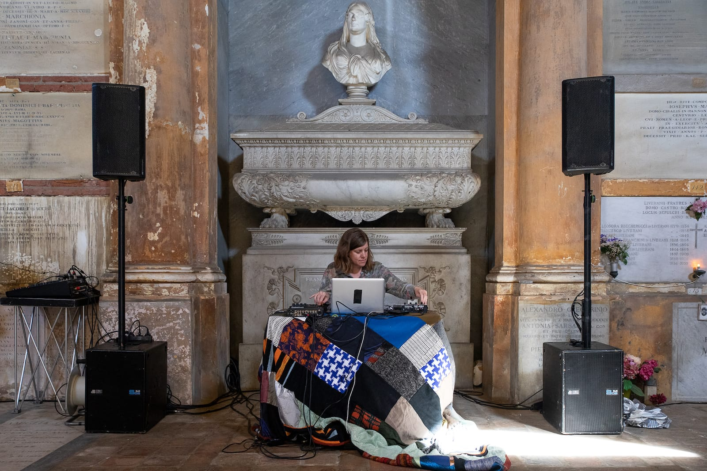
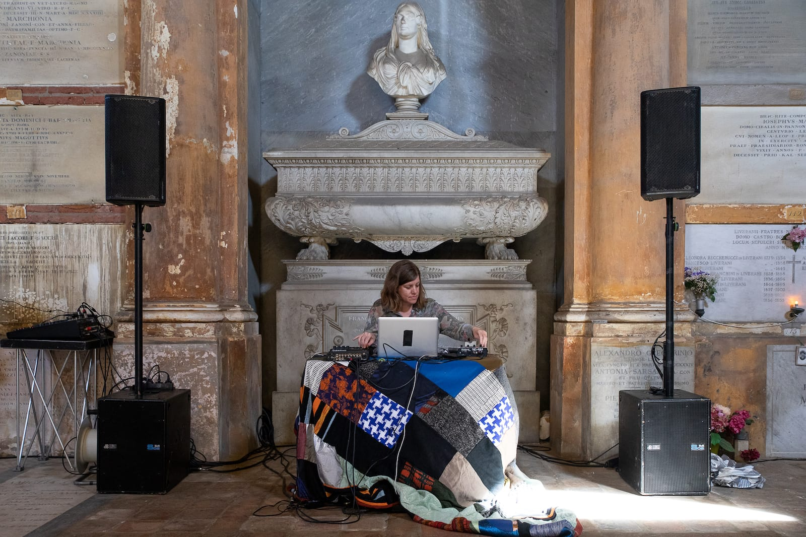

Luglio is an extemporaneous reworking of the private dialogue between the Berlin-based sound artist Felicity Mangan. Each collaboration begins with an exchange of images and text before getting together in person, as a map to follow and betray during the presentation. Luglio in its pliable form is activated by both performers upon the stage—on a par with each other in holding and remodeling the morphing psychographic and immediate landscape.
The dance explores the body as a malleable and changeable material, transforming the space in a place in a constantly changing process of becoming. Felicity Mangan builds the sound space exploring the timbre of animal voices and field recordings to create minimal quasi-bioacoustic environments.
The title Luglio, equally changeable, takes on variations from time to time derived from the spaces inhabited by the performance.
Luglio is a part of the choreographic project ARCIPELAGO/PRATICHE DI ABITAZIONE TEMPORANEA, actions built to be experienced in non-theatrical spaces.
So far, it took place in:
Firenze (Hortus Festival, 2020 ),
Berlino
(Schloss Biesdorf, a cura di Creamcake, 2020),
Bologna (Cimitero Monumentale della Certosa,
2021).

 
